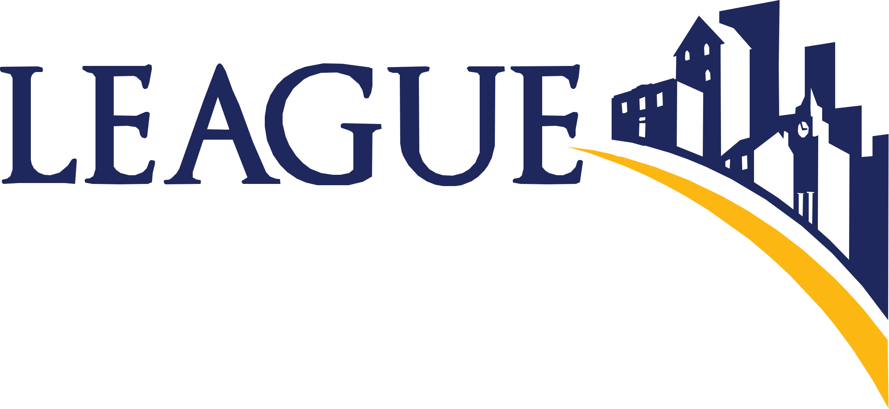

Expo Hall Explorer
Search for an exhibitor, select an occupied booth, or tap a Solution Sessions stage to view its schedule.
Exhibit HallOccupied booths are lightly shaded

Search for an exhibitor, select an occupied booth, or tap a Solution Sessions stage to view its schedule.